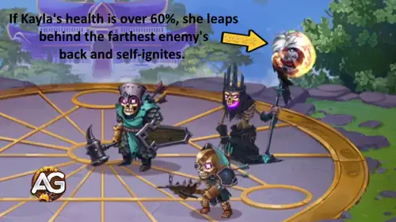

Antes assombrada por seu passado, Kayla agora luta ao lado de seu irmão Aidan para trazer luz e esperança de volta ao DomÁnio. Seja abatendo suportes da retaguarda como Sebastian ou resistindo aos golpes na linha de frente, a presença flamejante de Kayla muda o rumo da batalha.
Guia da Kayla - Hero Wars: Dominion Era, um jogo desenvolvido pela Nexters.
Em batalha, sua habilidade de atacar e destruir inimigos na retaguarda a torna um trunfo mortal para equipes ofensivas que buscam desmontar suportes frágeis e heróis de controle.
Prós e Contras da Kayla – Hero Wars: Web & Facebook
✅ Prós
Guerreira de linha de frente forte, com alto Ataque FÁsico e dano de queimadura, tornando-a uma grande ameaça para heróis da retaguarda.
Glifos da Fênix podem causar dano puro significativo ao longo do tempo, especialmente quando detonados com FaÁscas Enfurecidas.
HeroÁna ágil com a habilidade de saltar atrás dos inimigos (PossuÁda pelo Fogo), desestabilizando formações da retaguarda.
Alta sinergia com buffs de equipe e companheiros que aumentam Ataque FÁsico ou dano Puro.
A mecânica de Superaquecimento fornece bônus de Armadura e Defesa Mágica, aumentando a sobrevivência em lutas prolongadas.
⌠Contras
Vulnerável a heróis que podem reposicioná-la ou empurrá-la (ex.: Faceless, Lars, Maya, Cascade).
O estado de queima consome saúde ao longo do tempo, exigindo bom timing e suporte de cura.
O dano pode ser reduzido se os inimigos limparem ou evitarem rapidamente os Glifos da Fênix.
Dependente de posicionamento adequado para maximizar a efetividade das habilidades; má colocação reduz o impacto geral.
Menos eficaz contra equipes com alta redução de cura ou imunidade a efeitos negativos.
Prioridade de Aprimoramento das Habilidades de Kayla - Hero Wars: Dominion Era
Aprenda como aprimorar de forma eficiente as habilidades flamejantes de Kayla! Este guia explica o propósito de cada habilidade, o tipo de dano e por que alguns aprimoramentos são mais importantes que outros.
Habilidade - Fúria da Fênix, Hero Wars Dominion Era.
2ª – FaÁscas Enfurecidas
Quando Kayla ataca inimigos marcados pelo Glifo da Fênix, ela libera faÁscas flamejantes que atingem inimigos próximos com dano fÁsico. Essa habilidade espalha o dano entre vários inimigos, tornando-a ainda mais perigosa quando múltiplos alvos estão queimando.
Fórmula: (140% Ataque FÁsico + Nvl * 120).
Prioridade de Evolução:Alta – Essa habilidade funciona em conjunto com a principal, aumentando seu dano em área total. É muito eficaz em lutas de grupo e ajuda Kayla a eliminar heróis da retaguarda mais rapidamente. Aprimore esta após a Fúria da Fênix.
Quando a saúde de Kayla está acima de 60%, ela salta para trás do inimigo mais distante e se incendeia. Nesse estado flamejante, ela perde 2% de sua vida máxima por segundo, mas aumenta significativamente sua frequência de ataque e continua marcando inimigos com Glifos da Fênix. Quando sua saúde cai abaixo de 30%, ela recua para junto de sua equipe.

Habilidade - PossuÁda pelo Fogo, Hero Wars Dominion Era.
4ª – Superaquecimento
Após Kayla parar de queimar, ela entra no estado de Superaquecimento, ganhando bônus adicionais de Armadura e Defesa Mágica. Isso a ajuda a sobreviver um pouco mais depois que seu ataque flamejante termina.
Fórmula de Bônus de Armadura:(27240 + 35% de Ataque FÁsico + Nvl * 20 + 800).
Fórmula de Bônus de Defesa Mágica:(27240 + 35% de Ataque FÁsico + Nvl * 20 + 800).
Melhor Skin para Kayla – Hero Wars: Dominion Era
Descubra quais skins da Kayla você deve aprimorar primeiro em Hero Wars: Dominion Era, com base em como cada uma melhora suas habilidades e desempenho geral em batalha.
Skin Padrão
Bônus de Atributos: Agilidade +1.365
- Ataque FÁsico proveniente da Agilidade: +4.095
- Armadura proveniente da Agilidade: +1.365
Cada ponto de Agilidade concede dois pontos de Ataque FÁsico, um ponto de Armadura e um ponto extra de Ataque FÁsico se a Agilidade for o atributo principal do herói.
Prioridade de Evolução:Muito Alta – Esta skin oferece o aumento direto mais forte no dano de Kayla. Como suas principais habilidades, como Fúria da Fênix e FaÁscas Enfurecidas, escalam com Ataque FÁsico, essa skin tem o maior impacto em seu desempenho ofensivo em qualquer modo de jogo.
Total de Agility Skin Stones para o nÁvel máximo:
55.410
Total de Agility Skin Stones para o nÁvel máximo:
55.410
Prioridade de Evolução dos Glifos da Kayla
Descubra a melhor ordem para aprimorar os glifos da Kayla em Hero Wars: Dominion Era. Saiba quais atributos mais fortalecem suas habilidades flamejantes e aumentam sua sobrevivência em batalhas longas.
1º Glifo – Ataque FÁsico
Este glifo fortalece diretamente todas as habilidades de dano da Kayla. Tanto Fúria da Fênix quanto FaÁscas Enfurecidas escalam com Ataque FÁsico, tornando este seu glifo mais forte e importante.
Bônus de Atributos: Ataque FÁsico +4.340
Prioridade de Evolução:Muito Alta – Como todos os ataques e habilidades se beneficiam do Ataque FÁsico, este glifo oferece o maior aumento geral de poder. Deve ser sempre o primeiro a ser aprimorado.
2º Glifo – Vida
O atributo de Vida aumenta a sobrevivência da Kayla durante seu estado de PossuÁda pelo Fogo, no qual ela perde HP continuamente. Mais Vida significa que ela pode permanecer em chamas por mais tempo, estendendo sua fase de alto dano antes de recuar.
A Penetração de Armadura ajuda Kayla a causar mais dano real contra tanques resistentes. Ela complementa o atributo de Ataque FÁsico, garantindo que seus golpes atravessem as defesas inimigas com eficácia.
Bônus de Atributos: Penetração de Armadura +6.500
Prioridade de Evolução:Alta – Muito útil para aumentar o dano total, especialmente contra heróis com alta Armadura. Aprimore após o Ataque FÁsico para melhorar o potencial ofensivo.
Cada ponto de Agilidade concede dois pontos de Ataque FÁsico, um ponto de Armadura e um ponto extra de Ataque FÁsico se a Agilidade for o atributo principal do herói.
Prioridade de Evolução:Baixa – Oferece crescimento equilibrado, mas mais lento do que os glifos focados em ataque direto. Deixe por último, após os principais atributos de dano estarem aprimorados.
Prioridade de Evolução dos Artefatos da Kayla – Hero Wars: Dominion Era
Prioridade de Evolução:Muito Alta – Artefato mais importante. É ativado junto com a habilidade suprema da Kayla, Shieldbreaker, aumentando o Ataque FÁsico da equipe por 9 segundos. Isso maximiza o dano de suas habilidades e o impacto ofensivo geral.
Artefato Pacto do Defensor:
Bônus de Atributos: Armadura +12.546, Defesa Mágica +12.546
- Ataque FÁsico proveniente da Agilidade: +18.747
- Armadura proveniente da Agilidade: +6.249
Prioridade de Evolução:Alta – Segunda prioridade. Melhora tanto o Ataque FÁsico quanto a Armadura, aumentando diretamente o dano das habilidades da Kayla e oferecendo um pouco mais de sobrevivência.
Melhor Companheiro para Kayla
Escolher o companheiro certo para Kayla maximiza seu dano de queimadura e a efetividade de suas habilidades, melhorando tanto o ataque quanto a sobrevivência em batalha.
Albus – O melhor companheiro para Kayla, pois seu bônus aumenta tanto o Ataque FÁsico quanto o Ataque Mágico, enquanto sua habilidade bônus impulsiona o Dano Puro causado por Kayla, amplificando diretamente suas habilidades Fúria da Fênix e FaÁscas Enfurecidas. Isso torna seu dano de explosão e queimadura contÁnua significativamente mais forte.
Estes heróis são eficazes contra Kayla ao desestabilizar seu posicionamento, reduzir o tempo de efeito de seu dano de queimadura ou controlá-la com habilidades de controle de grupo.
Faceless: Sua habilidade Lançamento Poderoso ergue o inimigo mais próximo no ar e o lança no centro da equipe inimiga, atordoando todos os inimigos na área por 2 segundos. Isso interrompe os ataques de Kayla e impede que ela aplique ou detone os Glifos da Fênix de forma eficiente.
Maya: Sua habilidade Laços Venenosos prende os inimigos nas extremidades do campo de batalha, puxando-os juntos e envenenando-os. O veneno causa dano puro significativo ao longo de 6 segundos, contra-atacando a sobrevivência de Kayla e forçando-a a sair do posicionamento ideal para aplicar Glifos da Fênix.
Melhores Bandeiras de Guerra para Kayla – Hero Wars
Descubra as melhores Bandeiras de Guerra para Kayla em Hero Wars: Dominion Era, aumentando seu dano de queimadura e impulsionando a eficiência da equipe em batalhas de linha de frente.
Bandeira de Guerra dos Guerreiros Ágeis:
BenefÁcio para Kayla e Equipe: Aumenta a velocidade de recarga das habilidades dos Guerreiros em 5%, permitindo que Kayla e outros aliados de linha de frente apliquem Glifos da Fênix e ataques básicos com mais frequência, maximizando o dano de queimadura e a pressão sobre a retaguarda inimiga.
Bandeira de Guerra do DeclÁnio:
BenefÁcio para Kayla e Equipe: Reduz a cura da equipe inimiga em 10%, garantindo que o dano de queimadura de Kayla proveniente dos Glifos da Fênix e das FaÁscas Enfurecidas seja mais eficaz, especialmente contra equipes com alta sustentação.
Bandeira de Guerra da Prontidão:
BenefÁcio para Kayla e Equipe (com Aidan): Fornece 100 de energia ao herói mais recuado no inÁcio da batalha e a cada 20 segundos. Quando combinada com Aidan, sinergiza perfeitamente com Laços de Chama e Abraço da Fênix. O escudo de Aidan protege tanto ele quanto Kayla, absorvendo dano e explodindo para lançar Glifos da Fênix nos inimigos. Isso permite que Kayla maximize seu dano de queimadura com segurança enquanto controla a linha de frente, tornando a equipe altamente eficiente em ataques coordenados.
Melhores Equipes para Kayla – Hero Wars: Dominion Era
Principais Equipes de Defesa para Kayla
#
Tabela: Melhores Equipes de Defesa para Kayla
Axel, Aidan, Sebastian, Dante, Kayla, Rufus
Khorus, Aidan, Isaac, Guus, Kayla, Julius
Axel, Fafnir, Thea, Sebastian, Dante, Kayla
Principais Equipes de Ataque para Kayla
#
Tabela: Melhores Equipes de Ataque para Kayla
Rufus, Kayla, Dante, Sebastian, Aidan, Axel
Julius, Kayla, Guus, Isaac, Aidan, Khorus
Kayla, Sebastian, Thea, Fafnir, Axel
Conclusão – Guia de Kayla Hero Wars: Dominion Era
Foque em evoluir as habilidades na prioridade recomendada, enfatizando Fúria da Fênix para alto dano explosivo e queimadura contÁnua.
Equipe artefatos que aumentem Ataque FÁsico e sobrevivência, como Chakram da Frenesi Escaldante e Anel de Agilidade.
Escolha pets que amplifiquem o dano Puro ou melhorem a sinergia das habilidades, como Albus, para aumentar suas capacidades ofensivas.
Use Bandeiras de Guerra que acelerem a recarga das habilidades, reduzam a cura inimiga ou forneçam energia aos aliados, especialmente em combinação com Aidan para Laços de Chama e Abraço da Fênix.
Fique atento aos counters que podem reposicioná-la ou atordoá-la, como Faceless, Lars, Maya e Cascade, e ajuste a composição da equipe conforme necessário.
No geral, Kayla se destaca quando usada estrategicamente com posicionamento correto, sinergia e suporte. Com planejamento cuidadoso, ela pode dominar batalhas, controlar a linha de frente e causar dano de queimadura devastador aos inimigos, tornando-se uma heroÁna indispensável em Hero Wars: Dominion Era.
Você gostou do nosso Guia da Kayla para Hero Wars Web e Facebook? Há algo que não entendeu ou gostaria de sugerir mudanças? Convidamos você a se juntar à nossa sessão de comentários na página do Alexandre Games Blog. Não hesite em expressar sua opinião, clarificar suas dúvidas e compartilhar sua sugestões. Clique no botão abaixo para começar:


 30.825
30.825